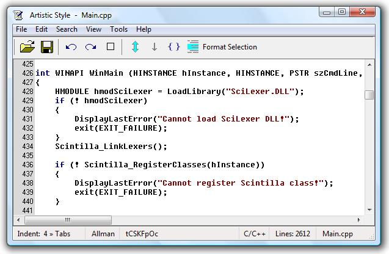
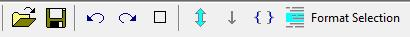

Artistic Style for Windows
A Windows indenter and formatter
of C, C++, C# and Java source code
Editor Reference
|
|

Artistic Style for Windows is a C, C++, C#, and Java source code indenter and formatter that uses Artistic Style as the engine. It is a simple, easy to use, intuitive graphic user interface (GUI) for Artistic Style. It is a fully integrated GUI, not a separate front-end program. The Scintilla editing component is used as the editor and allows for unrestricted selective formatting of a document. Everything done in the editor is undo-able, including formatting of the entire document. It allows formatted documents to be reviewed and, if necessary, reformatted using different options. It also allows for limited modification of the source code.
The Options Dialog box contains a user friendly preview window that shows the effects of each option as it is selected. A wide range of options allow for customized document formatting. Search capabilities allow for review of selected code segments, such as classes, switches, or case statements. File backup capability is provided.
Windows Versions
Artistic Style for Windows should work with Vista and Windows 98 or higher.
It will work with Windows 95 if Internet Explorer 5 has been installed.
Terminology
To be consistent with Artistic Style the following terms are used in describing
source code operators. Brackets or Braces refer to the
symbols {}. Parens refers to the symbols (). Block
parens refers to the symbols [].
Artistic Style for Windows does not come with an installer and does not use the system registry. To install the files, extract the zipped file into the folder where you want the files to reside. . This can be done from Windows Explorer by right clicking on the zipped file and selecting "Extract All". Then install the executable and help files in the selected folder. This can be "C:\Program Files\AStyleWin\" or in the folder with your development environment.
The program has a configuration file, AStyleWin.ini, which will be created when the program is executed. If your Windows version has a current user's home directory, it will be put in the APPDATA directory. This will be "C:\Users\<User>\AppData\Roaming" for Vista or "C:\Documents and Settings\<User>\Application Data" for XP. Otherwise the file will be put in the folder with the executable.
You can create a shortcut to the executable or execute it from your development environment. The Integration section has examples. You may also want to create a shortcut to the documentation. If you want the Table of Contents in a frame, open the file FrameL.html (left frame) or FrameR.html (right frame). You may want to change the frame html files so the Table of Contents frame is the right size for your monitor. Change the "frameset cols=" statement in FrameL.html and FrameR.html to display the correct size for your system.
To uninstall, simply remove the executable, documentation, and the configuration file. There are no registry entries.
When formatting a document you can either format the entire document or only selected parts of it. This is done by selecting the text to be formatted using the toolbar or the edit menu. Text between braces can be selected by double clicking on a brace.
By allowing selective formatting, the entire document does not have to be reformatted each time you need to format a new section. This will allow you to have custom formatting in a document. Formatters will sometimes UN-format carefully formatted and readable source code and make it less readable as a result. Selective formatting will allow you to keep special formatting and apply the formatting only to sections that need it. It will also allow you to correct any formatting that is incorrect or that you just do not like and the corrections will not be uncorrected at a later date.
The selection may be made to any part of the document without restriction. However, if it is formatted with different options than the surrounding code, the results may not be what you wanted. It is usually best to format blocks of code, such as an entire function. The editor has the following selection options.
Select All
Selecting "Select All" in the Edit menu or on the tool bar will select
all of the text in the document. Press the symbol on the tool bar or select the command from the edit
menu. Use this selection to format the entire source file.
Select to End
Selecting "Select to End" in the Edit menu or on the tool bar will select
from the caret to the end of the document. Press the symbol on the tool bar or select
the command from the edit menu.
Select to Brace
Selecting "Select to Brace" in the Edit menu or on the tool bar will select
the entire area between two matching braces. The caret must be on a brace to use
this option. It can be either an opening or a closing brace. Then press the symbol on the tool bar or select the
command from the edit menu. It will select text to the matching brace.
You can also use this to select the area between parens (). This will allow selective formatting for multiple lines of function arguments, such as in the CreateWindowEx function.
If you place the caret on an unmatched brace the brace will turn red. When this occurs the selection will not be made.
Double Click
The previous select to brace command can also
be used by double clicking on a brace. It will select the text between the braces or parens the same as using
the tool bar or menu commands.
Format Selection
Selecting "Format Selection" in the Tools menu or on the tool bar will format the selected text. The selected text will be replaced by the reformatted
text.
The Editor allows you to review all changes before the file is saved. It also will allow you to change formatting you do not like. It has search capability as well as indent and unindent capability.
All formatting done in the editor is undoable, including formatting of the entire source. The undo capability will allow you to change the options and reformat until you find the format you like. Some options work well together and some do not. The Editor will allow you to review the results before the file is saved. After the file is saved, the formatting options used cannot be reversed.
The backup option is on the File menu. If it is checked a backup will automatically be created each time a file is opened. The copy will be in the same directory as the original file and the file name will have the suffix .orig. A message will be displayed in the status bar giving the name of the saved file. When a new file is opened or the program is terminated, the copy is sent to the recycle bin. Therefore the original file is always available in the recycle bin and will have the .orig suffix.
To open the last saved copy use "Revert" on the File Menu. A message will be displayed in the status bar giving the name of the reverted file. To open a copy other than the last one saved, the copy must be restored from the recycle bin and opened with the "Open" menu option. Then use "Save as" to remove the .orig extension.
If the backup option is not checked a backup file will not be created.
Artistic Style for Windows checks the command line when executed and can open the active document if a calling program provides the capability. The path and filename must be provided as a command line parameter. If the path is missing, the document must be in the current directory. Following are examples that execute Artistic Style for Windows with the active document opened at execution.
Visual Studio .NET
Microsoft Visual Studio .NET (VS) is a development environment that includes
the C and C++ programming language. It has a formatter but it does not have the capabilities of Artistic Style.
For example you cannot choose between attached or broken brackets and there are no options for switch formatting.
External programs are configured in VS from the Tools menu (Tools‑>External Tools). To add a tool click on the Add button. Enter the following:
Title: Artistic Style
Command: <program path>AStyleWin.exe
Arguments: $(ItemPath)
Initial directory: $(ItemDir)
The <program path> should be replaced by the actual path to AStyleWin.exe. The parameter $(ItemPath) and $(ItemDir) are selected from the list of macros.
Execute the program by activating a file and selecting Tools‑>Artistic Style. The file can be activated in either the Solution Explorer or the Editor.
AStyleWin can also be set up to execute from a toolbar. Select Tools->Customize, Commands tab. Select the Tools Category. From the Commands select "External Command xx" where xx is the command number of AStyleWin, and drag the command to a toolbar. After closing the Customize box the button name will change from "External Command xx" to "Artistic Style for Windows".
SciTE
SciTE is a text editor that uses the Scintilla edit control. Commands to the Tools
menu for C source files can be added to the SciTEUser properties or the cpp properties file. Open the appropriate
file from the Options menu. The following example uses command number 3. You may, of course, use any number you
want. Enter the following:
command.name.3.$(file.patterns.cpp) =Artistic Style
command.3.$(file.patterns.cpp) =<program path>AStyleWin.exe $(FilePath)
command.subsystem.3.$(file.patterns.cpp) =1
The <program path> should be replaced by the actual path to AStyleWin.exe. If the optional command command.save.before.3.$(file.patterns.cpp) is set to 1, SciTE automatically saves the file before execution. If it is set to 2, SciTE will not save the file, otherwise SciTE asks you.
The optional command.is.filter.3.$(file.patterns.cpp) property states that the command modifies the current file so it may need to be read in after performing the command. To use this you must also set load.on.activate=1 in the Global or User properties file.
Crimson Editor
The Crimson Editor is a text editor with spell check and macros for recording
repetitive tasks. External programs are configured from the Tools menu (Tools‑>Configure User Tools).
Enter the following:
Menu text: Artistic Style
Command: <program path>AStyleWin.exe
Argument: "$(FilePath)"
The <program path> should be replaced by the actual path to AStyleWin.exe. The $(FilePath) should be enclosed in quotes so spaces can be used in the path or file name. Checking "Save before execute" will save the file before executing Artistic Style for Windows. When a file has been reformatted, the editor will detect the change and ask if you want to reload it.
There is no "Close" on the File Menu. A new file can be opened without closing the current one. You will be prompted if the current document needs to be saved.
Open
Open a file.
Save
Save the document. This also resets the undo history of the document. You cannot undo
a document past a save point.
Save As
Save the document with a new name. Has the same effect on the undo history as Save.
Backup
If this option is checked a copy of the file is saved when a new file is opened.
The copy will be in the same directory as the original file and the file name will have the suffix .orig. The
suffix is in addition to the original file extension (i.e. main.cpp.orig). A message will be displayed in the
status bar giving the name of the saved file. When a new file is opened or the program is terminated, the copy
is sent to the recycle bin. Therefore the original file is always available in the recycle bin.
Revert
Replace the current file with the original. A message will be displayed in the status
bar giving the name of the reverted file.
Exit
Quit the program. You will be prompted if the current document needs to be saved.
Undo
Undo the last document change. You can undo any document operation, including formatting
of the entire source.
Redo
Redo the last undo operation.
Select All
Select all of the text in the document. Use this selection to format the entire
source file.
Select to End
Select text from the current caret position to the end of the document.
Select to Brace
Select text from the current brace to the corresponding matching brace.
The caret must be next to a brace to use this option. The brace at the caret may be a beginning or an ending brace.
You can also accomplish the selection by double clicking on a brace.
Indent
Increase the indentation of current line or selected block. The indentation setting
is displayed in the first area of the status bar.
Unindent
Decrease the indentation of current line or selected block. The indentation setting
is displayed in the first area of the status bar.
Find
Find the specified text. A dialog box will be displayed where you enter the text to
find.
Find Next
Find the next matching text. The accelerator key F3
will be faster than using the menu.
Find Prev
Find the previous matching text. The accelerator key Shift+F3
will be faster than using the menu.
Go to Line
Move to a specified line. A dialog box will be displayed where you enter the
line number.
Tool Bar
Show or hide the tool bar.
Status Bar
Show or hide the status bar.
Line Numbers
Show or hide the line numbers. The line numbers margin can be used to select
lines of text by dragging the cursor in the margin.
Selection Margin
Show or hide the selection margin. This margin can be used to select lines
of text by dragging the cursor in the margin.
Whitespace
Show or hide the space and tab characters.
Indent Guides
Show or hide the indent guides. Indent guides are set from the "Spaces per
tab" setting in the Options Dialog and are indicated in the first area of the status bar. If the document has
not been formatted, they may not align with the actual indentation of the text.
End of Line
Show or hide the end of line indicators.
Word Wrap
Wrap or do not wrap lines of text. If you enable word wrap, lines wider than the
window width are continued on the following line. A visual flag (little arrow) at the end of a line indicates
a wrapped line.
Tool Bar Images
Allows you to select large or small images for the tool bar. Large images
are convenient since they are few in number and most formatting can be done from the tool bar.
Format Selection
Formats the selected text in the document with the options selected in
the Options Dialog.
Settings
Display the current settings from the Options Dialog. The long Artistic Style option
is displayed first followed by the short option.
Options
Display the Options Dialog.
Help
Open the help html file.
About
Display program information and acknowledgements.
Editor Context Menu
The editor context menu may be obtained by right clicking anywhere in
the editor window. Its purpose is to provide quick access to frequently used commands from the
Tools and Edit submenus. Refer to the corresponding menu descriptions for information
on the context menu commands.
Scrollbar Context Menus
The vertical and horizontal scrollbar context menus may be obtained
by right clicking anywhere on the scrollbars. They contain scroll navigation commands. The purpose of the commands
that are not obvious can be easily determined by selecting the command and observing the result.
Most accelerator keys are indicated in the menu after the command they activate. The following are additional keys that can be used and are not indicated with the menu items. Their purpose is to provide compatibility with commonly used accelerator keys.
Indent Ctrl + Shift + >
Indent Ctrl + Shift + I
Unindent Ctrl + Shift + <
Unindent Ctrl + Shift + U
Undo Alt + Backspace
Redo Alt + Shift + Backspace
Redo Ctrl + Shift + Z
Save As Ctrl + F12

The tool bar contains selected commands from the menu. Its purpose is to provide quick access to frequently used commands. Context menus and accelerator keys can also be used for this purpose.
File Open
Display the open file dialog box. You will be prompted if the current file needs
to be saved.
File Save
Save the current document to disk.
Undo
Undo the last document change. You can undo any document operation, including formatting
of the entire source.
Redo
Redo the last undo operation.
Toggle Whitespace
Toggle the view whitespace option to show or not to show whitespace in
the document.
Select All
Select all of the text in the document. Use this selection to format the entire
source file.
Select to End
Select text from the current caret position to the end of the document.
Select to Brace
Select text from the current brace to the corresponding matching brace.
The caret must be next to a brace to use this option. The brace at the caret may be a beginning or an ending brace.
You can also accomplish the selection by double clicking on a brace.
Format Selection
Format the selected text using the options selected in the Options Dialog.
The status bar contains useful information that can be obtained quickly. It is divided into seven areas.
Indentation Settings
The first area shows the indentation settings from the Options Dialog.
The spaces per tab is followed by the indentation character (spaces or tabs). The » is only a separator and has
no special meaning.
Predefined Style
The second area shows the Artistic Style predefined
style option from the Options Dialog. The area will be blank if no predefined style has been selected.
Artistic Style Options
The third area shows the short
Artistic Style options from the Options Dialog. Detailed information on the options can be seen by selecting "Settings"
from the Tools menu.
File Type
The fourth area shows the type of file being edited. It will be either C/C++,
Java, or C#.
Lines in the Document
The fifth area shows the total number of lines in the document. The
total lines may change as formatting is applied.
File Name
The sixth area shows the name of the file being edited.
Message Area
The last area is for messages that containing various information. If a document
has been formatted it will show the indentation character (spaces or tabs) and the time it took to format the
document. It will also show the results of the file copy and file revert commands.
If you have bug reports, comments, corrections, suggestions, or feature requests send them to the email address below. When reporting bugs please send sufficient information research the problem, such as option settings, Windows version used, and any other information you think might be necessary. Errors in formatting the source code should be reported to the Artistic Style project page.
Jim Pattee